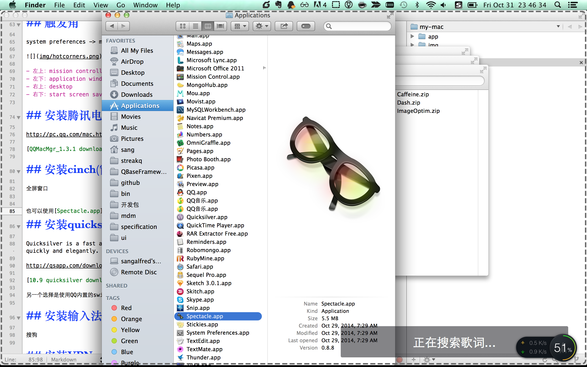
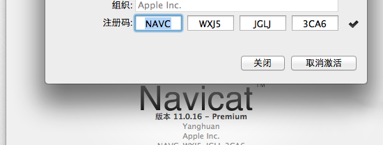
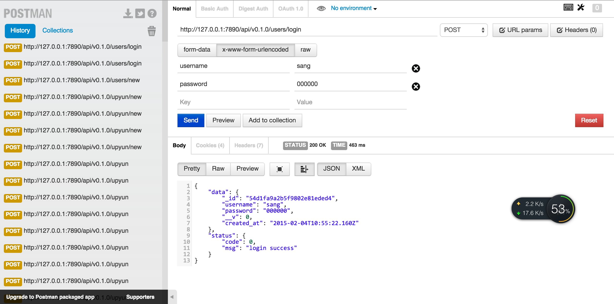
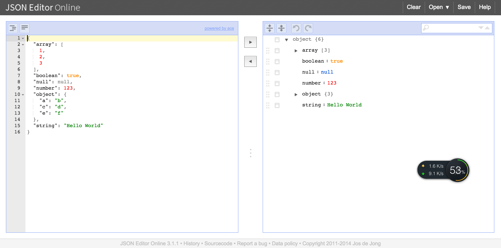

awesome-mac-practice2
键盘key说明
大部分人都记不住这些按键，下面给出说明
| Symbol | Key |
|---|---|
| ⌘ | Command Key |
| ⌃ | Control Key |
| ⌥ | Option Key |
| ⇧ | Shift Key |
搜索
如没有vpn，可以使用 http://baigoogledu.com/（目前已经不可用） ，少用baidu，多用github，stackoverflow等
mac无法安装本地pkg文件
出现错误提示：
“git.app” can’t be opened because it is from an unidentified developer.
Your security preferences allow installation of only apps from the Mac App Store and identified developers.
MAC现在无法打开不是所谓identified developer开发的程序了，悲剧！
大家注意！
一顿搜索。。。。。
原来只是一个设置的问题，苹果还这次还算客气
更新解决方法：
System Preferences -> Security & Privacy -> Allow application from [Anywhere]
开启root用户
http://support.apple.com/kb/HT1528?viewlocale=zh_CN&locale=zh_CN
OS X Lion (10.7) 和更高版本
- 从 Apple 菜单中选取系统偏好设置...。
- 从显示菜单中选取用户与群组。
- 点按锁图标并使用管理员帐户进行鉴定。
- 点按“登录选项...”。
- 点按右下方的“编辑...”或“加入...”按钮。
- 点按“打开目录实用工具...”按钮。
- 点按“目录实用工具”窗口中的锁图标。
- 输入管理员帐户名称和密码，然后点按“好”。
- 从编辑菜单中选取启用 Root 用户。
- 在“密码”和“验证”字段中输入您想要使用的 root 密码，然后点按“好”。
清理docker
iwork等应用你不会特别常用，而且用Spotlight或者quicksilver打开应用非常快，所以一定不要留不常用的
建议留5个左右，不要放太多，其他都移除
隐藏docker
奇数次隐藏
option + command + d
偶数次即显示
启用fn功能键

Trackpad
开启全部手势
触发角
system preferences -> mission controll -> hot corners

- 左上：mission controll
- 左下：application windows
- 右上：desktop
- 右下：start screen saver
安装腾讯电脑管家
http://pc.qq.com/mac.html
应用软件下载
方式1：
http://soft.macx.cn/
方式2：
使用腾讯电脑管家里的软件下载
查看所有快捷键
https://www.cheatsheetapp.com/CheatSheet/
安装cinch(窗口最大化)
全屏窗口

也可以使用Spectacle.app，Open Source,fredd,但是我觉得还是cinch比较习惯
安装quicksilver
Quicksilver is a fast and free Mac OS X productivity application that gives you the power to control your Mac quickly and elegantly. Quicksilver learns your habits, making your everyday chores simple and efficient.
http://qsapp.com/download.php
另一个选择是使用QQ内置的swiftly（按2此commmand键）
安装输入法
搜狗
安装VPN
云梯，一键安装
文本编辑器textmate2
免费开源
编辑器建议

- 多使用open folder
- 每次只打开一个项目，记住每一个文件名和目录名，了解代码结构
- 使用cmd + T来快速打开
- 少用IDE(如webstorm之类的)，多用文本编辑器，少依赖语法提示
图片使用的textmate2，其他文本编辑器，如Sublime Text其实也一样，只是快捷键可能不太一样。
我最喜欢的是它可以在命令行里打开（preffences/terminal -> install ）
mate shadowsocks.xcodeproj/project.pbxproj
比vim还是好用一点。
Navicat Premium

ImageOptim
ImageOptim is a free app that makes images take up less disk space and load faster, without sacrificing quality. It optimizes compression parameters, removes junk metadata and unnecessary color profiles.
https://imageoptim.com/
API查找
Dash是mac系统下最好用的api查找工具

Caffeine （屏幕高亮）
SVN
- Versions(莲花)
- CornerStone(一般洁净冲突的时候使用)
version1.3.2破解教程
- 下载官方原版，安装，运行，你会看到软件右上角有“试用版，还剩XX天”的提示。
- 退出软件，下载，解压。
- 用Finder转到应用程序，找到versions，右键“显示包内容”，进入contents -> MacOS 目录，把下载的附件替换进去（记得先备份），OK了退出，重新打开versions，你会发现那个购买提示不见了......
evernote （日常记录）
skitch （简单的图片处理软件）
一般增加个图标，箭头，文字啥的，还比较好用
sketch 矢量图
http://pan.baidu.com/share/link?shareid=857214605&uk=152253923#path=%252FSketch
颜色插件： https://github.com/RayPS/my-sketch-colors
下载插件可以使用
Paragon NTFS for Mac 9.0.1
用于读写ntfs硬盘
AxureRP-extension-for-Chrome-0.6
这个安装要翻墙，可以从下面地址下载
AxureRP-extension-for-Chrome-0.6.zip 备份
TexturePacker-2.4.3(已破解，cocos2D制图软件）
安装brew
The missing package manager for OS X.
http://brew.sh
安装
ruby -e "$(curl -fsSL https://raw.githubusercontent.com/Homebrew/install/master/install)"
测试
brew install wget
brew install openssl
Cask安装
A CLI workflow for the administration of Mac applications distributed as binaries
brew tap caskroom/homebrew-cask
brew install brew-cask
好处
- 稍后给出
安装commandline和xcode
安装git
配置ssh
生产ssh秘钥
➜ docker ssh-keygen -t rsa
Generating public/private rsa key pair.
Enter file in which to save the key (/Users/sang/.ssh/id_rsa):
Enter passphrase (empty for no passphrase):
Enter same passphrase again:
Your identification has been saved in /Users/sang/.ssh/id_rsa.
Your public key has been saved in /Users/sang/.ssh/id_rsa.pub.
The key fingerprint is:
3c:b6:58:24:23:68:bf:33:f2:70:e2:71:e6:77:1f:c4 sang@sangalfreds-MacBook-Pro.local
The key's randomart image is:
+--[ RSA 2048]----+
| |
| . |
| o . o . |
| . . . = . |
| . S E |
| . + + |
| = B . . . |
| . @ o. . . |
| . o. . .. |
+-----------------+
查看
➜ docker cat ~/.ssh/id_rsa.pub
ssh-rsa ANzaC1yc2EAAAADAQABAAABAQC9A3e1i1vZj2SHX4KZAgQffrEj7N0/ZUuB6ZKGdWe8eVV08cv3rZlDHhEKtOI+JfFiR5TepvSax59LrxVDKniq7swSITNnXFL3KczFew9HUoHzZOZGg36bsFAzl372DkrHQZTExQaOFidQacWVWjhQwincRwJRkLMe596JkO8ZCqzUJgp0ax3mDNX1W3MIG1mrYFMQAQp6BpGlzvIy3PHqJDu/ibYzLCnbwVq2uL2q+gw6tqGyl9nibpfxa5qUSl4ZpZTfOCzqw9K+I3GqMO63XgTv6fkV9CsmkGWkv/jsDqbtyLt8JzychFPF3M4fD1JE/FWAb+xS+pWTgrrJx9hN sang@sangalfreds-MacBook-Pro.local
更新到github上

配置mail
- 苹果内置的mail（http://jingyan.baidu.com/article/48b558e37c63e77f38c09ad9.html）
- foxmail
- Sparrow
- Thunderbird
- Postbox
- Mailplane
- Attachment Tamer
我目前用得苹果内置mail，够用，另外推荐Sparrow，据说非常好用
Spotlight plugin
The missing Spotlight plugin system http://flashlight.nateparrott.com
打造好用的Mac终端
终端
下载iterm2，iterm2默认支持256色，可以在新tab中使用前一个tab的路径，支持鼠标选中复制等。
配色
下载或者定制一个配色方案，我现在使用的配色是一个老外做的，我觉得还不错，叫solarized，作者提供dark和light两种配色，更棒的是，它为各个常用的终端和编辑器都提供了相关的颜色的配置。即使你不适用iterm2，使用其他的，也都能找到它的颜色配置。
下载解压后，找到iterm2相关的配置，打开item2的Preferences->Profiles->Colors标签，点击Load Preset列表中的Import进行导入，然后选择一种即可。在此确认一下在Preferences->Profiles->Terminal标签下的Terminal Emulation选择的是xterm-256color。
shell
Mac和linux一般默认shell都是bash，然而这个世界上最强大的shell非zsh莫属。强大的命令补全，自动纠错等。我之前的一篇文章也简单介绍过终极shell--zsh。
下载或者用你的包管理工具，我用的是homebrew，直接brew install zsh就行了。
然后你需要找一个好的配置，或者你自己配置。这里提供2个比较好的配置，一个是http://grml.org/zsh/，还有一个是oh-my-zsh。我用的是后者，2个都很不错的。
curl -L https://github.com/robbyrussell/oh-my-zsh/raw/master/tools/install.sh | sh
vim
https://github.com/carlhuda/janus
安装命令
curl -Lo- https://bit.ly/janus-bootstrap | bash

更多
如果你想学习mac下的命令行操作，我推荐peter wang的《Linux Guide for Complete Beginners》
参见 http://happypeter.github.io/LGCB/book/
language
node
ruby
安装rvm
安装ruby2.1
python
go
打开http://golang.org/doc/install下载pkg的安装包
go1.3.1.darwin-amd64-osx10.8.pkg
安装后需要做如下操作
打开vi ~/.zshrc，增加
export PATH=/usr/local/go/bin:$PATH
生效
source ~/.zshrc
测试
> go version
> go version go1.3.1 darwin/amd64
虚拟机
Vagrant 和 Docker：如何在 OS X 上安装和设置 Postgres, Elasticsearch 和 Redis
docker
docker需要最新的virtualbox，目前是VirtualBox-4.3.16-95972-OSX.dmg，如果不是最新的可能有网络连接的错误
https://docs.docker.com/installation/mac/
docker pull sequenceiq/hadoop-docker:2.5.1
virtualbox
paralles Descktop
高级
git常用
alias gs='git status'
alias gp='git push'
使用alias来简化命令输入
- 重磅推荐peter wang写的 搬进 Github
下面给出一些git学习资料
- git-guide
- git入门gif演示
- 写出好的 commit message
- github-cheat-sheet
- 分支管理
- Git-it Challenges is a terminal based app for learning Git and GitHub
- 高富帅们的Git技巧（译）
- Git 怎样保证fork出来的project和原project（上游项目）同步更新
- 10.Git之本地忽略
- git-flow 备忘清单
- Git flow 開發流程 ihower
-
$ git update-index --assume-unchanged /path/to/file #忽略跟踪 $ git update-index --no-assume-unchanged /path/to/file #恢复跟踪
删除 untracked files
git clean -f
连 untracked 的目录也一起删掉
git clean -fd
连 gitignore 的untrack 文件/目录也一起删掉 （慎用，一般这个是用来删掉编译出来的 .o之类的文件用的）
git clean -xfd
在用上述 git clean 前，墙裂建议加上 -n 参数来先看看会删掉哪些文件，防止重要文件被误删
git clean -nxfd
git clean -nf
git clean -nfd
递归初始化所有子模块
git submodule update --init --recursive
查找冲突
ack '<<<<<<<'
github 好慢
好了, 看到这里大家应该对 node 和 npm 已经没有速度慢的问题了.
github 慢, 或者说是它的资源 host 被堵而已, 大家可以通过简单的 hosts 映射解决:
185.31.16.184 github.global.ssl.fastly.net
配置环境变量
export PATH=/usr/local/go/bin:$PATH
配置完成后，需要source一下
source ~/.zshrc
mongodb client
暂时先不评测
- http://mongohub.todayclose.com/download
- http://robomongo.org/
视频录制
- 使用QuickTime player就可以（阿虎推荐）
- Miro Video Converter
另外screenflow是收费的，screenflick是免费得，基本够用
高效搜索
http://beyondgrep.com/install/
brew install ack
ack --help
Chrome 插件
上网用chrome，速度会感觉明显快，当然chrome也是一个吃内存的老虎，没事关一关
Postman

json editor

amCoffee
使用shadowsocks-go来配置vpn
why go ？
因为node的版本被
Deprecated; please use Other versions.
Many people are asking why. Here's why.
- https://github.com/clowwindy/shadowsocks-nodejs/issues/35
- https://github.com/joyent/node/issues/5949
The GC of node.js sucks.（黑我大node）
Python version handles 5000 connections with 50MB RAM while node.js version handles 100 connections with 300MB RAM. Why should we continue to support node.js?
安装步骤
https://github.com/shadowsocks/shadowsocks-go
配置go-lang环境，注意，要把${GOPATH}/bin放到path里
export GOPATH=/home/sang/go-path
export PATH=${PATH}:${GOPATH}/bin
然后下载
# on server
go get github.com/shadowsocks/shadowsocks-go/cmd/shadowsocks-server
在${GOPATH}/bin下载 config.json
wget https://github.com/shadowsocks/shadowsocks-go/blob/master/config.json
自己改一下ip和密码，然后
nohup ./shadowsocks-server &
最好是做成开机启动项，免得以后麻烦
现在打开shadowsocks mac客户端测试吧
注意disable cgo
It's recommended to disable cgo when compiling shadowsocks-go. This will prevent the go runtime from creating too many threads for dns lookup.
我没处理它
http://blog.studygolang.com/tag/golang_install/ 这里面有说的。
shell命令备忘
增加写权限
sudo chmod -R g+w /usr/local
Contributing
- Fork it
- Create your feature branch (
git checkout -b my-new-feature) - Commit your changes (
git commit -am 'Add some feature') - Push to the branch (
git push origin my-new-feature) - Create new Pull Request
推荐
版本历史
- v0.1.0 初始化版本
欢迎fork和反馈
- write by
i5tingshiren1118@126.com
如有建议或意见，请在issue提问或邮件
License
this repo is released under the MIT License.